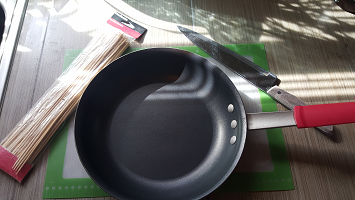
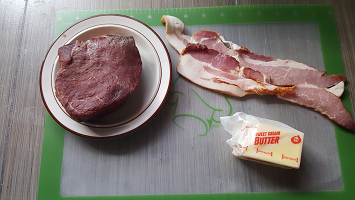
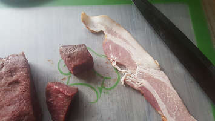
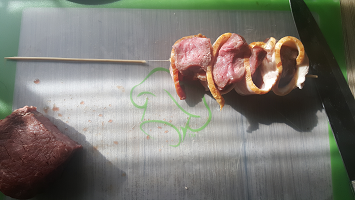
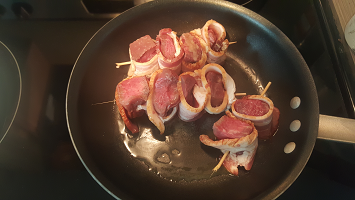

Bacon Wrapped Steak Skewers
This is a quick and yummy recipe for my favorite bar food, bacon wrapped steak skewers. Everyone loves bacon!
Before you get started...
Before you get started, here's a list of the items you will need.


Prepare your skewers
Prepare the skewers by slicing the steak into rough cubes. Wrap the bacon completely around each cube of steak, trim, then skewer the bacon and steak. Note that you will need to break the skewers in half in order to fit the frying pan.


Let's cook
Put the stove on medium heat. Place a pat of butter in the pan, melt and spread it. When melted, place the skewers. Cover with the pot lid. Turn the skewers during cooking, so that each side is cooked.

Serve
Plate them up and enjoy!